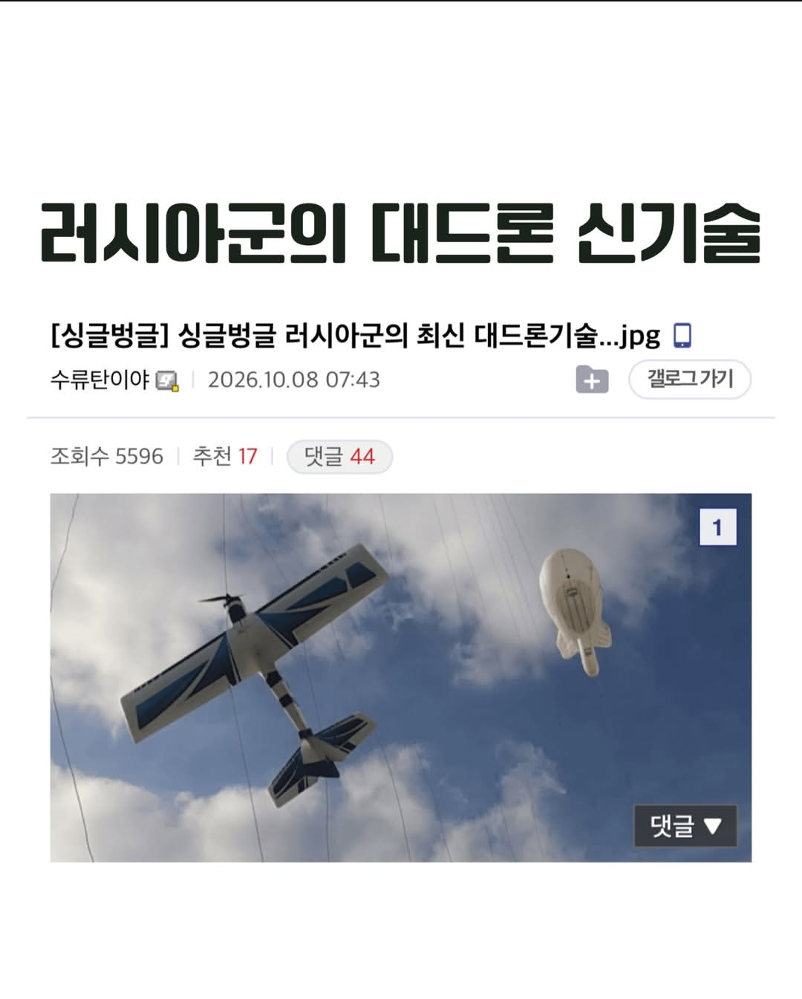
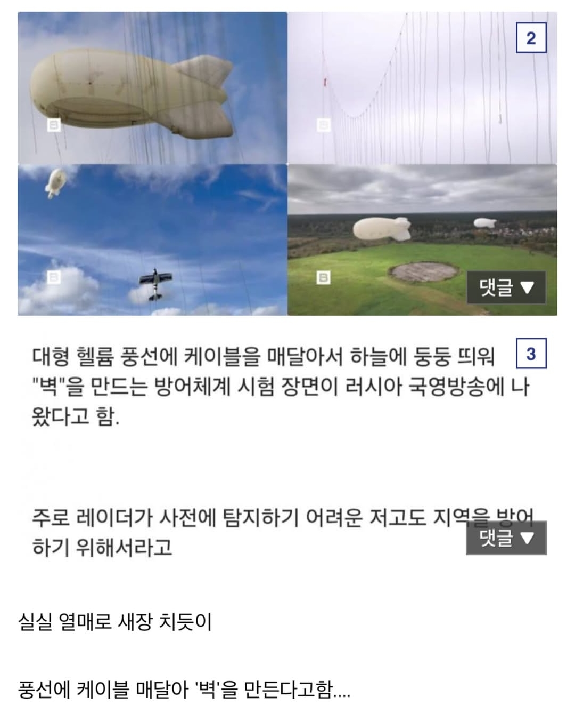

돌고돌아서 다시 2차대전 방식으로 돌아왔네
저 풍선을 공격하겠지?
저실에 폭발한 뒤 구멍난 곳으로 이동하면 되지 않나
저 거리에서 보일정도의 케이블이면 폭발 한번으론 안될거같은데
케이블 특성상 얇고 저건 고정도 안되있어서 저걸로 막을려고 하는 저고도 소형 드론으로 운용가능한 폭약정도로는 유의미한 데미지를 입히기 힘듬
풍선을 노려야되는데 그럼 그지역에서 드론공습 한다고 광고하는꼴이라 대응하기 상당히 까다로울거임
논리적 추론에 의한 결론 도출 감사해요
@논리적추론에의한결론도출 논리적 추론에 의한 결론 도출 감사해요
배틀딱에서나 보던걸 다시 보네
도황! 콘
도황 씹간지네!!
엥 이거 완전 런던대공습 방어전아니냐??
2차대전떄 있던거 아니냐 ㅋㅋㅋ
그냥 탐지 요격 기술 개발하는게 나아보이는데 ㅋㅋㅋㅋ 풍선 터질꺼 아니야 ㅋㅋㅋ
시간과 돈은 하늘에서 떨어짐?
당장 dji 드론 날려봐라 ㅋㅋ
그 조그마한거 어케 겨누고 격추시킬건데
하늘에 뜨면 잘 보이지도 않음
내가 조종하는건데도 좀만 멀어지면 어딘지 감 안옴
저 풍선에 드론한대만 박으면 "벽"은 그냥 무너지는거잖아
풍선이야 다시 만들면 되지
풍선 터진거에 줄다시연결해서 띄어야하는데 시간도 오래걸리고 연결작업하는건 손쉬운 타격지점일듯??
그 도론에 중요 시설물이나 사람 죽는거보다 풍선 터지는게 낫지..저 드론 하나 하나가 어디 박아서 사람죽일지 알고
배틀필드1에서 보던 대공저지풍선이 100년이 지나서 복원되었구나
도황 진짜 씹간지네
풍선 터트리면 끝이잖아
다시 띄우면됨
그물치는거네 ㅋㅋ
풍선을 공격하면 공격 탐지가 되겠지?
오
커버 가능한 범위가 너무 제한적인거 아닌가
2차대전 메타 ㄷㄷ
레드 제플린 ㄷㄷㄷ
그럼이제 선발대드론으로 풍선터트리고 따라오는 드론이 뒤이어서 중요시설들 타격하겠군
도황 현대전 최적화네
도황 씹간지네
열기구에 꼴아박고 뚫겠지 ㅋㅋ
저 비행선에 불 붙으면 재앙 아닌가 ㅋㅋ
헬륨
내가 너무 구시대적인 사건만 기억하고 있었구나..
더 위다!
풍선이 어그로 끄는게 탱크 터지고 사람죽는것보단 훨씬 싸겠네
도황 진짜 신메타네
2차대전에서도 사용한...
근데 정작 저 비행선은 고전적인 무기에 너무 취약하고
1차대전인가 2차대전인가... 저렇게 도시에 비행선+와이어 대공망을 설치해서 꽤 효과를 봤다는데...
와이어를 피해서 고도를 높이면 대공포에 터짐
와이어 대공망 안으로 들어가면 잘 보이지도 않는 와이어 걸려서 추락
대공포도 안닿을 고도로 올라가면 폭격 명중율이 형편없이 떨어짐
드론 상대로 생각보다 효율은 있어보이네